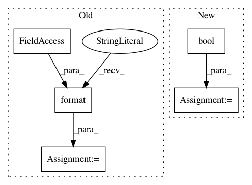

4949fa2bc15fcf5364706e2d48eba00f58e4de7a,perfkitbenchmarker/linux_benchmarks/resnet_benchmark.py,,Run,#Any#,219
Before Change
samples.extend(mnist_benchmark.MakeSamplesFromTrainOutput(
metadata, stdout + stderr, elapsed_seconds, step))
if benchmark_spec.mode in ("train_and_eval", "eval"):
resnet_benchmark_eval_cmd = (
"{cmd} --tpu={tpu} --mode=eval --num_cores={num_cores}".format(
cmd=resnet_benchmark_cmd_step,
tpu=benchmark_spec.tpu_eval,
num_cores=benchmark_spec.num_shards_eval))
stdout, stderr = vm.RobustRemoteCommand(resnet_benchmark_eval_cmd,
should_log=True)
samples.extend(MakeSamplesFromEvalOutput(
metadata, stdout + stderr, elapsed_seconds))
After Change
"--num_eval_images={num_eval_images}".format(
env_cmd=benchmark_spec.env_cmd,
script=resnet_benchmark_script,
use_tpu=bool(benchmark_spec.tpus),
data_dir=benchmark_spec.data_dir,
model_dir=benchmark_spec.model_dir,
depth=benchmark_spec.depth,
train_batch_size=benchmark_spec.train_batch_size,
eval_batch_size=benchmark_spec.eval_batch_size,
iterations=benchmark_spec.iterations,
data_format=benchmark_spec.data_format,
precision=benchmark_spec.precision,
skip_host_call=benchmark_spec.skip_host_call,
num_train_images=benchmark_spec.num_train_images,
num_eval_images=benchmark_spec.num_eval_images
))
if FLAGS.tf_device == "gpu":
resnet_benchmark_cmd = "{env} {cmd}".format(
env=tensorflow.GetEnvironmentVars(vm), cmd=resnet_benchmark_cmd)
samples = []
metadata = _CreateMetadataDict(benchmark_spec)
elapsed_seconds = 0
steps_per_eval = benchmark_spec.steps_per_eval
train_steps = benchmark_spec.train_steps
for step in range(steps_per_eval, train_steps + steps_per_eval,
steps_per_eval):
step = min(step, train_steps)
resnet_benchmark_cmd_step = "{cmd} --train_steps={step}".format(
cmd=resnet_benchmark_cmd, step=step)
if benchmark_spec.mode in ("train", "train_and_eval"):
resnet_benchmark_train_cmd = (
"{cmd} --tpu={tpu} --mode=train --num_cores={num_cores}".format(
cmd=resnet_benchmark_cmd_step,
tpu=(benchmark_spec.tpu_groups["train"].GetName() if
benchmark_spec.tpus else ""),
num_cores=(benchmark_spec.tpu_groups["train"].GetNumShards() if
benchmark_spec.tpus else 0)))
start = time.time()
stdout, stderr = vm.RobustRemoteCommand(resnet_benchmark_train_cmd,
should_log=True)
elapsed_seconds += (time.time() - start)
In pattern: SUPERPATTERN
Frequency: 3
Non-data size: 5
Instances
Project Name: GoogleCloudPlatform/PerfKitBenchmarker
Commit Name: 4949fa2bc15fcf5364706e2d48eba00f58e4de7a
Time: 2019-02-25
Author: tohaowu@google.com
File Name: perfkitbenchmarker/linux_benchmarks/resnet_benchmark.py
Class Name:
Method Name: Run
Project Name: GoogleCloudPlatform/PerfKitBenchmarker
Commit Name: 4949fa2bc15fcf5364706e2d48eba00f58e4de7a
Time: 2019-02-25
Author: tohaowu@google.com
File Name: perfkitbenchmarker/linux_benchmarks/inception3_benchmark.py
Class Name:
Method Name: Run
Project Name: biolab/orange3
Commit Name: 1317bbf379ab5dc6fd8ec40f5ceab2f529dab871
Time: 2016-10-14
Author: janez.demsar@fri.uni-lj.si
File Name: Orange/widgets/classify/owclassificationtree.py
Class Name: OWClassificationTree
Method Name: get_learner_parameters